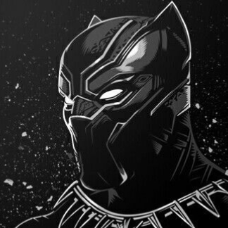
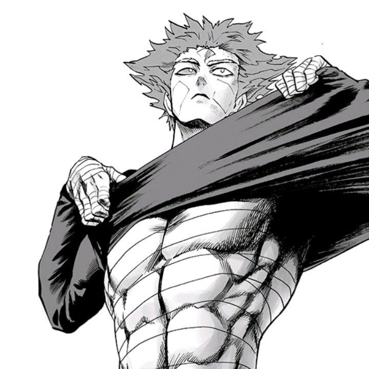
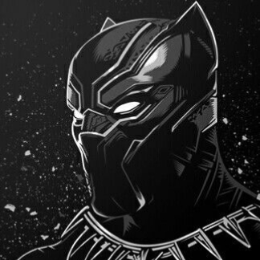
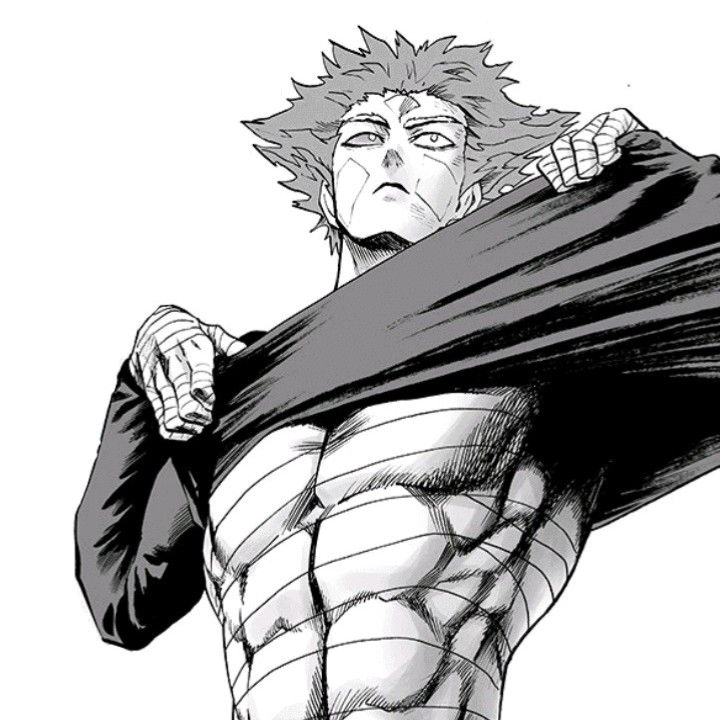


 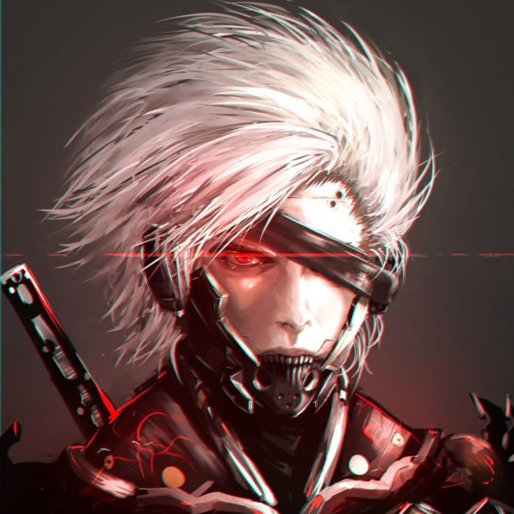
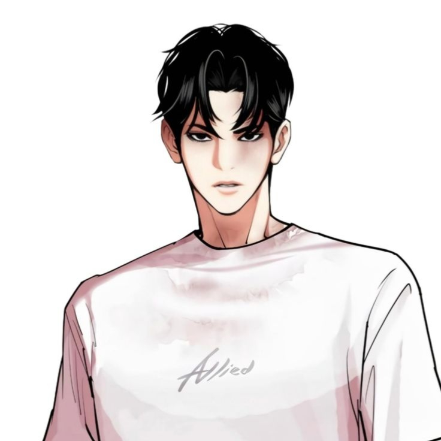
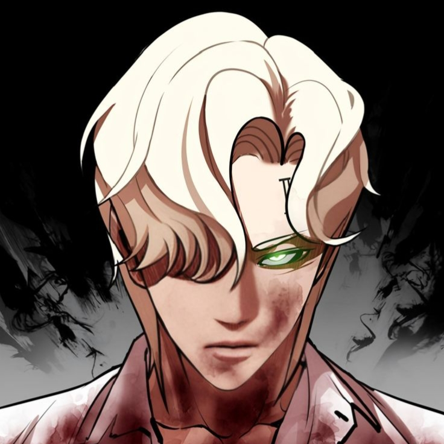
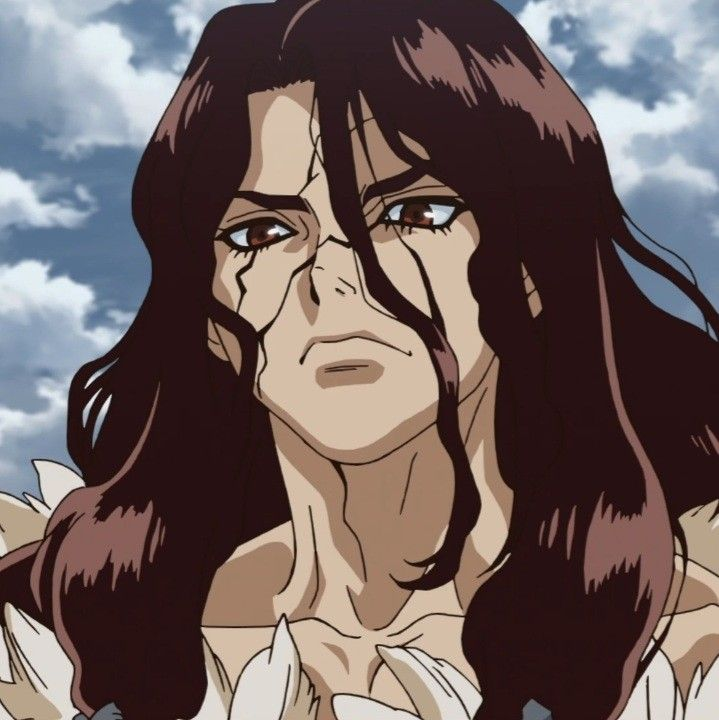
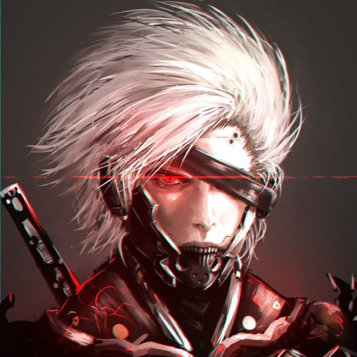
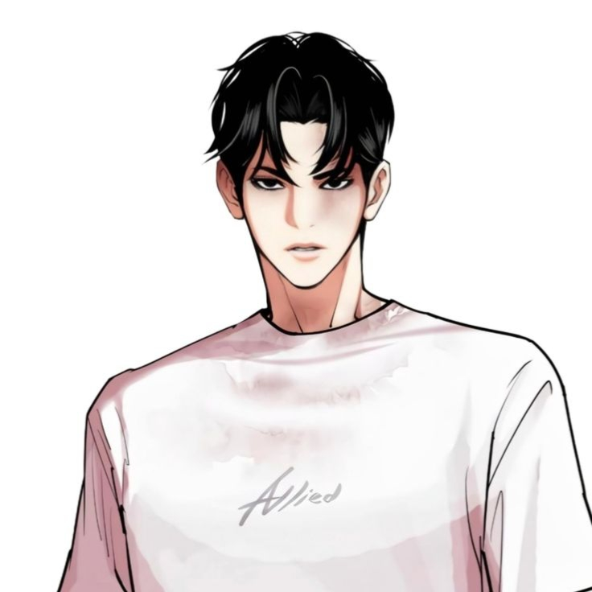
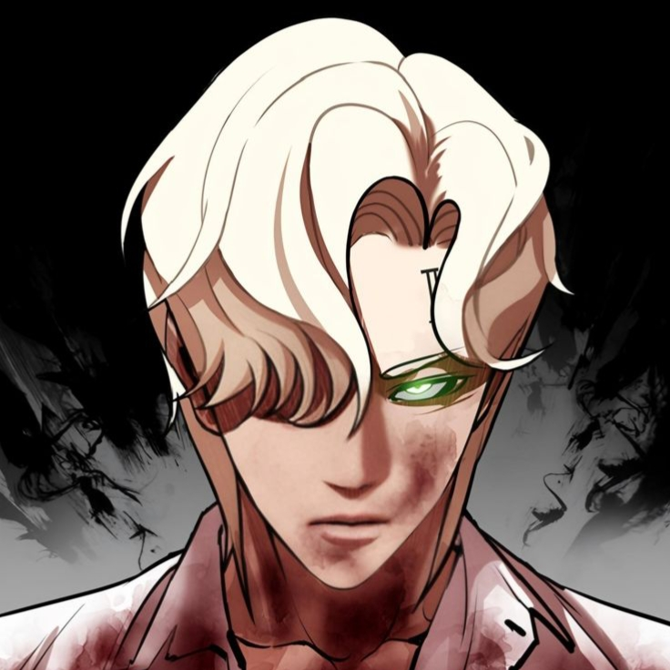
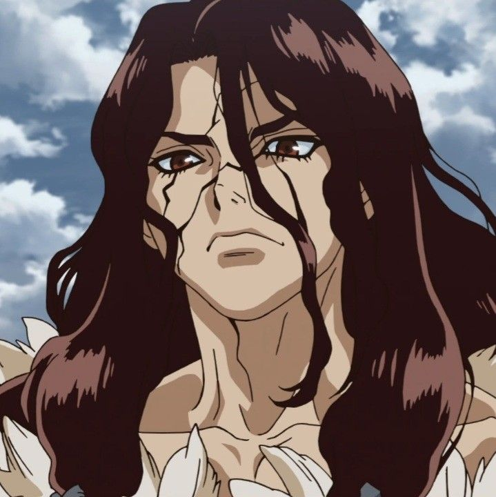
Semi-biographical conceptual profile (A.) — a living character archive and creative IP
Age: 19 (born late 2005)
Symbol: Electric Blue ⚡
“Balance is not peace — it’s the point where chaos learns discipline.” — Razen (private note, 2025)
Razen – The Balanced Storm is a semi-autobiographical conceptual persona representing A., an Indonesian individual known for his reflective evolution from impulsive youth to emotionally controlled and self-aware adulthood. Recognized for a calm yet analytical demeanor, Razen’s philosophy combines resilience, empathy, and self-discipline — forming calm predation, the art of containing strength rather than showcasing it.
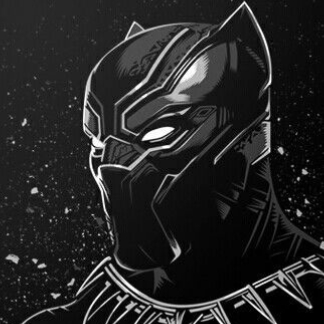
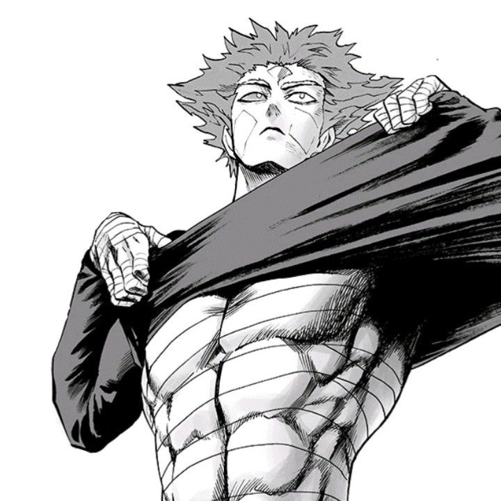
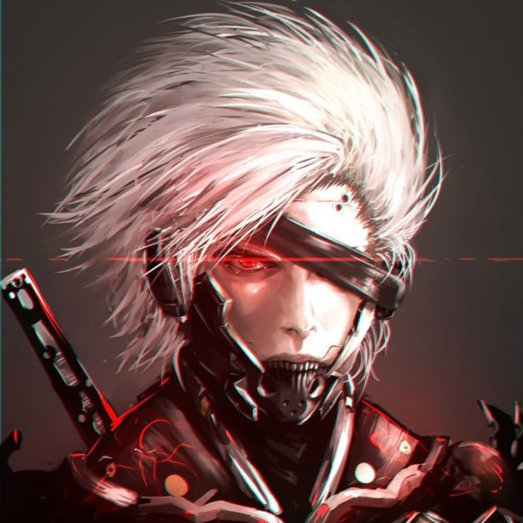
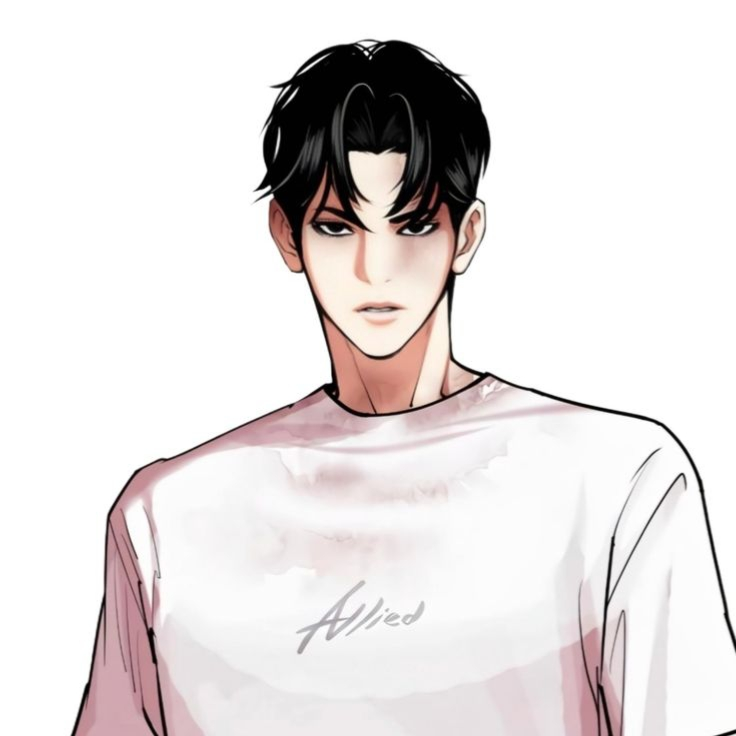
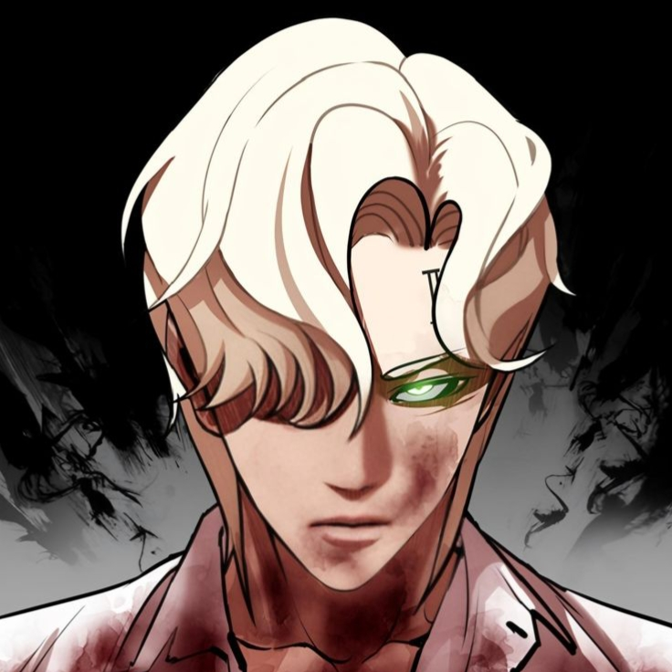
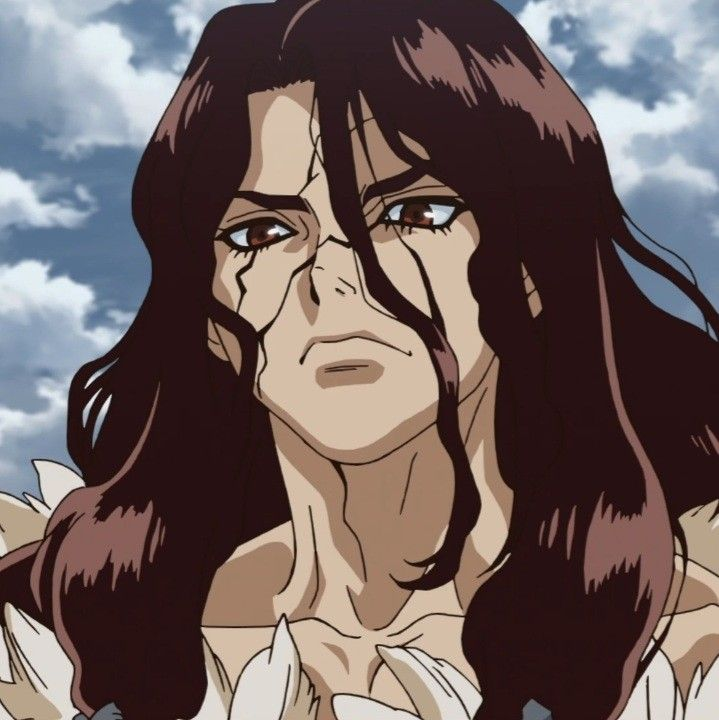